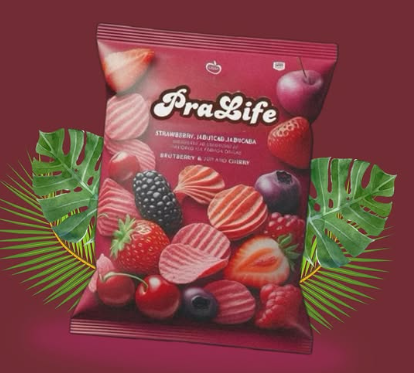
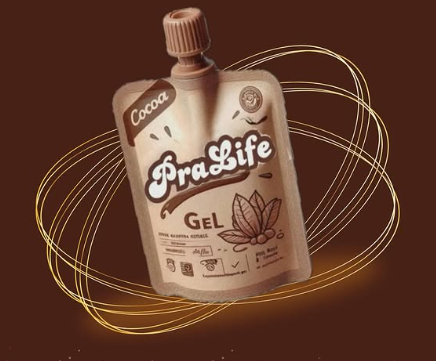

A PraLife é uma empresa brasileira comprometida com o bem-estar e a nutrição natural. Desenvolvemos snacks saudáveis como nossos crocantes chips de frutas vermelhas e o potente gel energético de cacau. Toda nossa linha de produtos utiliza ingredientes da flora brasileira, promovendo vitalidade com o melhor da natureza.
Nossos Produtos

Chips de Frutas Vermelhas
Leves, crocantes e feitos com morango, amora e cereja. Um lanche delicioso e saudável.

Gel Energético de Cacau
Fonte natural de energia com cacau e ingredientes nativos do Brasil. Ideal para esportes e rotina ativa.